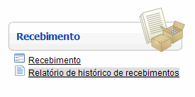
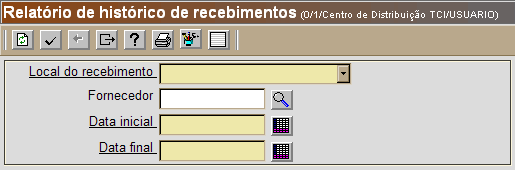
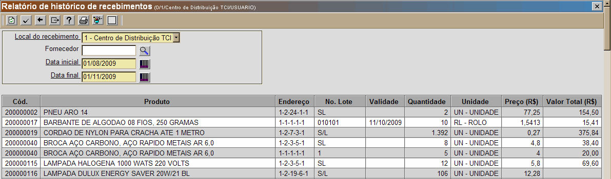

Relatório de Histórico de Recebimentos [ Voltar ]Este formulário permite a geração de um relatório com os recebimentos efetuados em um determinado período. O relatório pode conter os recebimentos de todos os fornecedores ou de apenas um determinado fornecedor. Este formulário se encontra dentro do menu "Recebimento". 
Ao clicar no menu, a seguinte tela será exibida: 
Execute os seguintes passos para gerar o relatório:1º Passo: selecione o local do
recebimento. O
campo "Local do
recebimento" é uma lista suspensa que exibirá os possíveis
locais para este relatório. 2º Passo: selecione o fornecedor desejado.
Se
desejar gerar o relatório de recebimentos de um determinado fornecedor,
informe-o aqui. Caso não saiba o código do fornecedor, clique
no
botão Observação: caso queira um relatório de recebimentos que inclua todos os fornecedores, deixe o campo "Fornecedor" em branco e siga para o próximo passo. 3º Passo: informe as datas inicial e final para o período do relatório. Clique no botão [Data]
para selecionar a data desejada ou: [Data]
para selecionar a data desejada ou:
4º Passo: clique no botão  [OK] para gerar o relatório. [OK] para gerar o relatório.
 Exemplo
de histórico de recebimentos
5º Passo: clique no botão  [Imprimir]
se desejar imprimir o relatório. [Imprimir]
se desejar imprimir o relatório. |